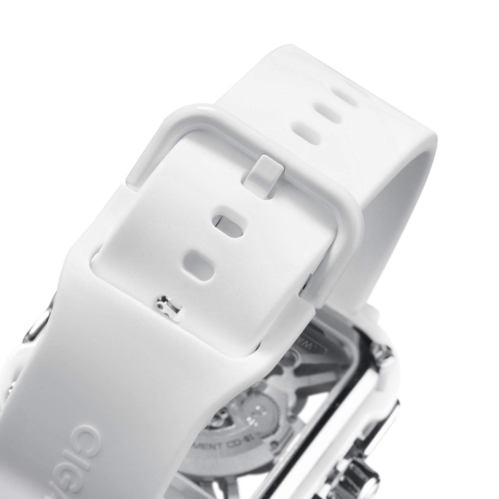
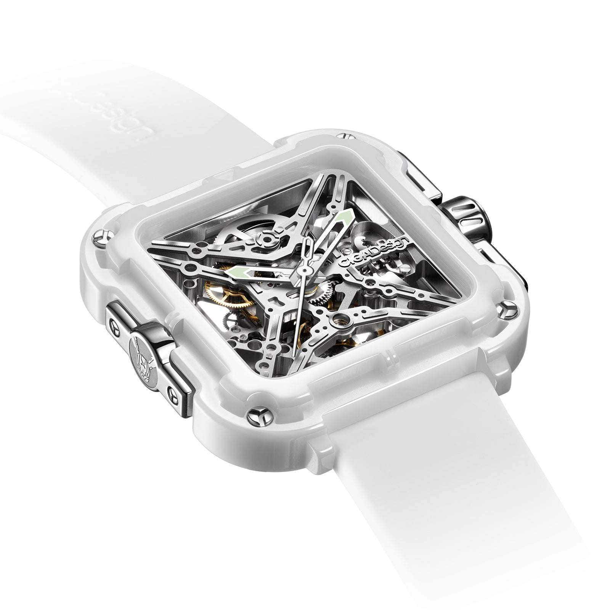
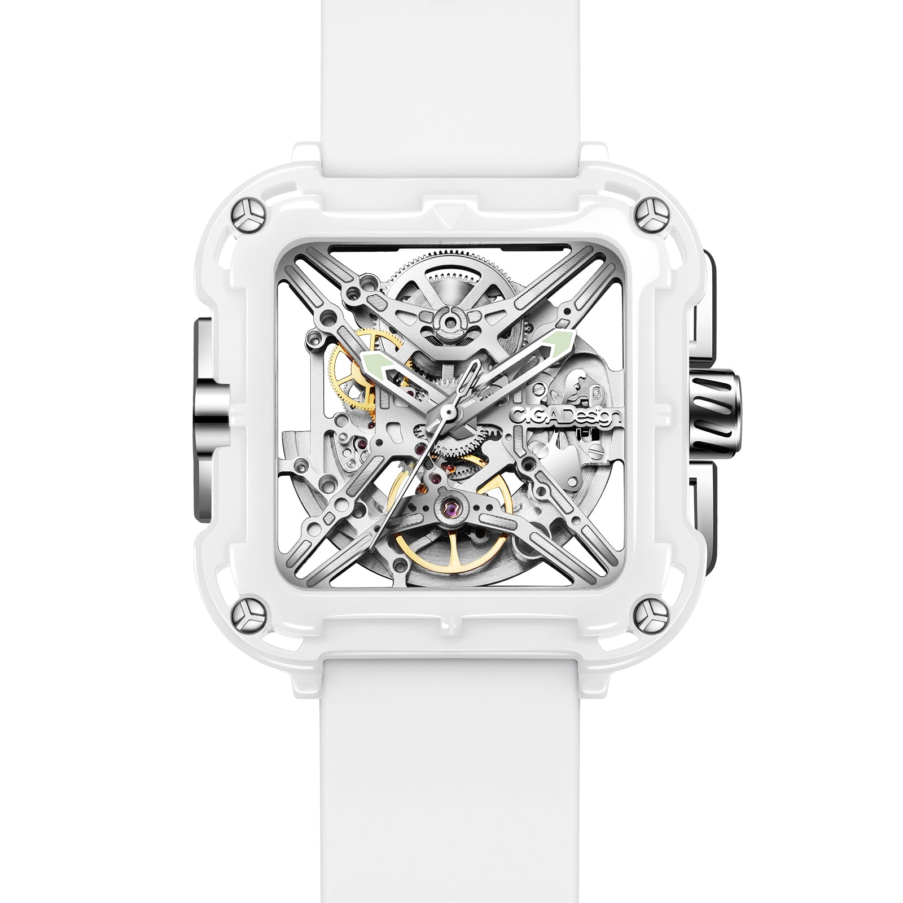
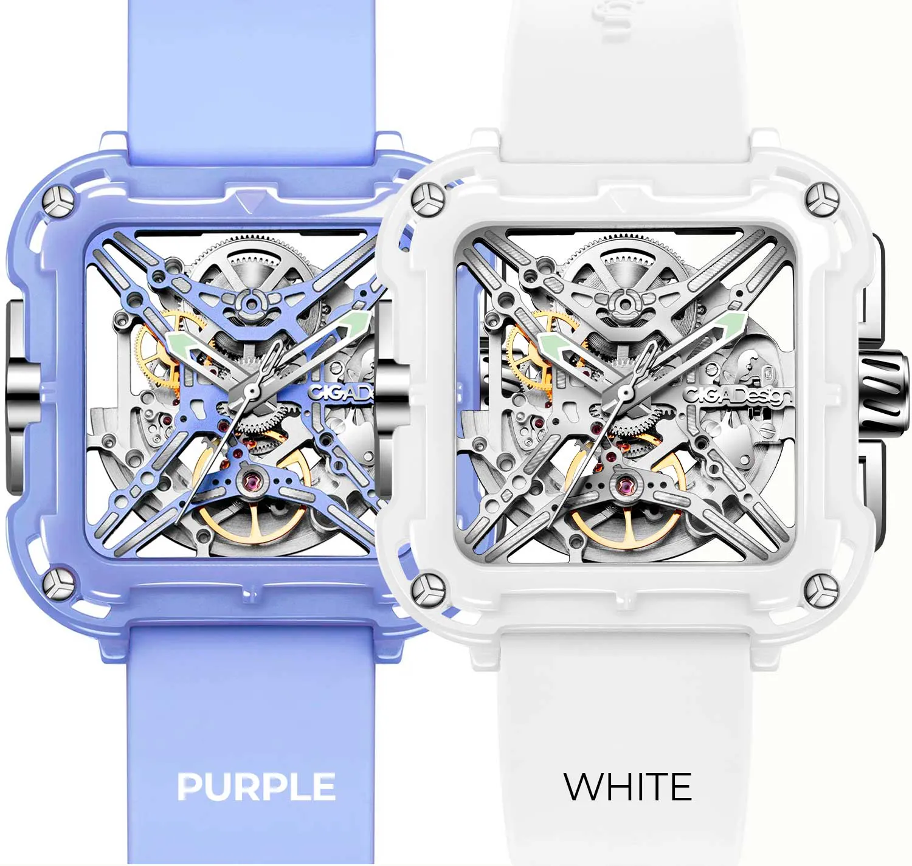
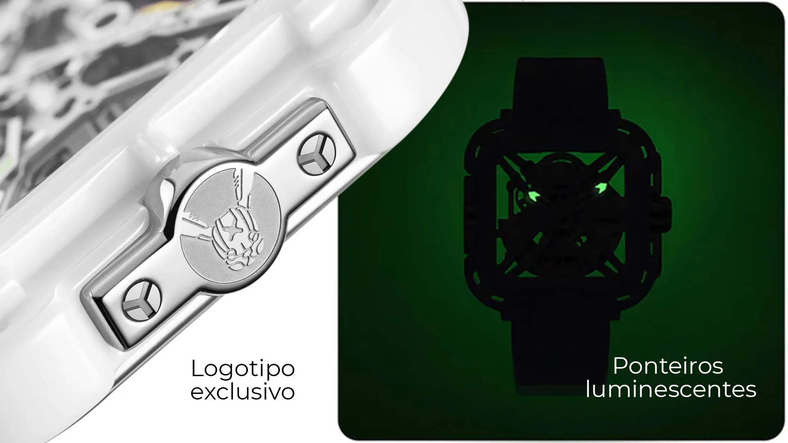

Cerâmica sinterizada, textura gravada em CNC e mecânica automática em proporções mais compactas. O Machina apresenta a relojoaria feminina da CIGA por um viés técnico e material.
Cerâmica de alta performance · Microgravação CNC de diamante
O Machina combina acabamento cerâmico, superfície gravada e presença mecânica em uma peça mais enxuta e precisa, sem cair no repertório decorativo previsível.

A caixa do Machina parte de cerâmica de óxido de zircônio sinterizada, escolhida pela combinação entre textura, cor e sensação tátil. O objetivo do modelo não é parecer delicado, e sim preciso e controlado.
A tonalidade rosada funciona como parte da identidade do material, não como simples revestimento cosmético. É isso que ajuda o Machina a manter um ar mais sofisticado e menos ornamental.

O padrão geométrico do mostrador é o ponto em que o Machina mais se aproxima da linguagem premium do Blue Planet: uma superfície que reage à luz, muda de profundidade e recompensa o olhar mais atento.
O movimento automático CD-01 com 24 joias e 40 horas de reserva mantém a peça ancorada na mecânica real, enquanto o fundo transparente reforça que o apelo do relógio não está só na face frontal.
Caixa em cerâmica com leitura limpa e tátil, alinhada a uma proposta feminina menos óbvia e mais técnica.
Microgravação do mostrador por fresamento CNC com ferramenta de diamante, precisão micrométrica em cerâmica de alta dureza.
Calibre automático com 24 joias e 40h de reserva. Visível pelo fundo de safira, a máquina que dá nome ao relógio.
Proporções calibradas para o pulso feminino, sem ceder em materiais ou mecânica. Elegância que tem substância.
Cerâmica 1400°C, CNC de diamante e movimento automático, tecnologia sem concessões em formato feminino.

| Tamanho da Caixa | 38 × 38 mm |
| Espessura | 10,5 mm |
| Material da Caixa | Cerâmica ZrO₂ sinterizada a 1400°C |
| Vidro | Cristal de safira anti-reflexo |
| Fundo | Transparente de safira |
| Movimento | CIGA CD-01 automático |
| Frequência | 21.600 semi-oscilações/h (3 Hz) |
| Reserva de Marcha | ≥ 40 horas |
| Joias | 24 rubis |
| Resistência à Água | 3 ATM (30 metros) |
| Pulseira | Cerâmica integrada com fecho de borboleta |
| Largura da Pulseira | 16 mm |
| Técnica de Gravação | CNC com ferramenta de diamante |
O texto técnico do Machina foi reposicionado para valorizar acabamento e superfície, que são os pontos realmente mais perceptíveis do produto. Isso deixa a página mais elegante e mais crível.
O Machina é tecnologia feminina sem concessões. Comunique o rigor técnico com a elegância que o produto merece.
O Machina existe para provar que relógio feminino de alto nível não precisa ser sinônimo de pedras decorativas ou redução de escala. É um relógio completo, com materiais de ponta e mecânica real, que simplesmente foi proporcionado para o pulso feminino. Essa é a mensagem central.
Dez ângulos narrativos para maximizar o impacto do seu conteúdo sobre o Machina.
| # | Direcionamento | Foco Narrativo | Base do Script (Exemplo) |
|---|---|---|---|
| 01 | Mais Duro que o Aço | Cerâmica ZrO₂, argumento de dureza | "Parece suave. Risca o aço. Isso é cerâmica de óxido de zircônio." |
| 02 | A Cor que Não Sai | Pigmentação permanente na cerâmica | "Não é tinta. Não é revestimento. É a cor do material. Nunca descasca." |
| 03 | Ferramenta de Diamante | CNC com ponteira de diamante para gravar cerâmica | "Poucas fabricantes no mundo conseguem gravar cerâmica com essa precisão. É ferramenta de diamante." |
| 04 | A Máquina que Você Vê | Fundo de safira, movimento automático visível | "Vire o pulso. A máquina que dá nome ao relógio está trabalhando." |
| 05 | Automático Feminino | Raridade do automático em relógios femininos | "Relógio feminino com automático real é exceção no mercado. Este é." |
| 06 | Hipoalergênico por Natureza | Cerâmica biocompatível para uso diário | "Cerâmica ZrO₂ é usada em implantes dentários. No pulso, é zero reação." |
| 07 | Leve como Deve Ser | Cerâmica como alternativa técnica e visual | "38mm de relógio que parece 28mm no pulso. Cerâmica é assim." |
| 08 | Para Quem Escolhe Por Si | Posicionamento para mulheres independentes | "Não precisa de ninguém para escolher um relógio assim. Ela sabe o que quer." |
| 09 | 40 Horas de Liberdade | Automático sem bateria para rotina intensa | "Usa no trabalho. Usa no evento. Usa na academia. 40h sem precisar de nada." |
| 10 | Tecnologia que Parece Arte | Paradoxo: processo industrial / resultado estético | "Sinterização industrial a 1400°C. Gravação com diamante. O resultado parece escultura." |
Imagens oficiais do Machina disponíveis para uso em seu conteúdo.


Duas versões cerâmicas: Purple e White. Uma leitura mais autoral, outra mais clean.
Compre direto no site oficial da CIGA design Brasil. Garantia, parcelamento e envio para todo o país pela JG Importadora.
Descontos cumulativos: 5% no Pix e mais 5% se for a sua primeira compra.
Comprar no Site Oficial usecigadesign.com.br